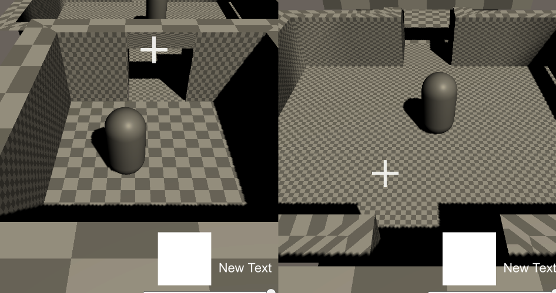

New year
Right, so where did the old FPS project go? well christmas came around and I got distracted by the 7DFPS jam. I came up with a idea of a zelda-like game that skinwalked as a minecraft clone, you don't really build houses, the idea was that the voxel terrain is for destruction of ancient tombs. By 7 days I actually had a decent clone of old minecraft in my own game engine. At the end of the jam I realized per Itch.io AI policy and the rules of the jam, I couldn't upload the game anyway. But it was fun so I kept working on it anyway, adding structures, lighting, lua support, sound. I was working towards getting basic survival up, but new years happen and I had a idea

I realized that the reason I been having issue returning to the FPS project is that it game design is very precise in nature, something i'm not good at. The player and their weapons, attacks sorta need to dance with the enemies attacks. Music is planned to be a big part of it too, something i'm very inexperienced at, maybe I shouldn't made me a game inspired by devil daggers. Knowing how much time Game design takes up, I had a idea on a whim, sense it's the new year. I take all the design I learnt from my old project, Pulverizer, and combine it with all the technical knowledge I learnt over the year. I already solved alot of design issues when developing pulverizer, it be nice to start from scratch with a clean base
I was going to polish the original build, but I played it and decided to start clean and do thing's right. New project, tons of packages, including unity ECS and netcode. The first few weeks was learning Netcode for entities and getting the hang of ECS structure. It typically wouldn't take too long if it weren't for the fact i'm also trying to account for Splitscreen co-op, singleplayer and multiplayer. But that's not really bad thing sense once I got physics, RPC's, Ghosts, Inputs, etc. It's alot of stuff to take in. And thing's will likely get more complicated once saving comes into play

One of the thing's I learnt from the year before is the concept of a Bootstrap. Single program that starts up starts other processes, like creating managers, resources, etc. I decided to develop the concept something I'll actually have to get working called a "LocalBootstrap", something that activates in a specific scene, locally. Meant for iteration of single Levels. The first few weeks was learning connection, hosting, etc. Not even player movement, just trying to get character select to work for multiple modes. But once I got that base started thing's sped up with the next big goal

One of the nice thing's about Netcode ECS that's different from Netcode for game objects is that Predictive movement practically comes with the package, there's likely alot of settings I have to experiment with. But movement doesn't feel sluggish. There's also alot of handy tools, like testing for bad internet, adding multiple windows for different players without building. Netcode as been alot easier to test then it was back when I was getting started. Once movement was done, physics fixed, splitscreen added. I begin working on the aiming with the goal of instanting enemies and bullets. But I came acrossed something that will be a slight issue in the feature. Netcode for entites doesn't really have a solution for SpriteRenderers, It will render on both the server and client. There's not alot of support to the point ECS as custom solutions like NSprites. NSprites doesn't work on my current verison so it likely means I'll have to create a custom solution, along with custom animator, etc. So I had to skip alot of the graphics and changed my goal from combat to Loading scenes in a orderly manner, plus I was stuck a day or two figuring how to detect ECS collisions. Todays the last day and I got cutscenes, Playerhubs, Levels to load and work
After I added the shotgun, I added code and begin working on a enemy spawner, just a simple timer and random picks of the 4 default enemies, swordsman, gernades man, wizard, flying crossbow. First test I didn't realize there was a error in the spawning code that made it only pick swordsman and flying enemies. I realized just how little feedback there is when shooting, It's impossible to tell if you hit a enemy or not. After adding a simple gunshot hole, I realized the range of the shotgun was really low. I also fixed the spawning issue. After the first test with the wizard I realized a really cool accidental mechnic. The roll I added was meant to stop fall damage kinda like mirror's edge, but sense I refactored the old code to also lower the collish to jankishly go under walls. I could actually dodge homing fireballs by bunnyhoping and dodgerolling under a wall
Frankly I feel like I've grown in alot of confidence, there's alot I need to learn but I got multiple modes to work together. I'm really excited for the future and hope to get a steel foundation implemented and begin designing levels, enemies, bosses, and guns. I learnt alot and I hope to apply everything to go the distance. My goal for next month is to organize all the code, clean it up. Get shooting and all the gameplay features added in some basic form, such as loadouts, replaying levels, saving, etc. Gonna be hell but I gotta march through it